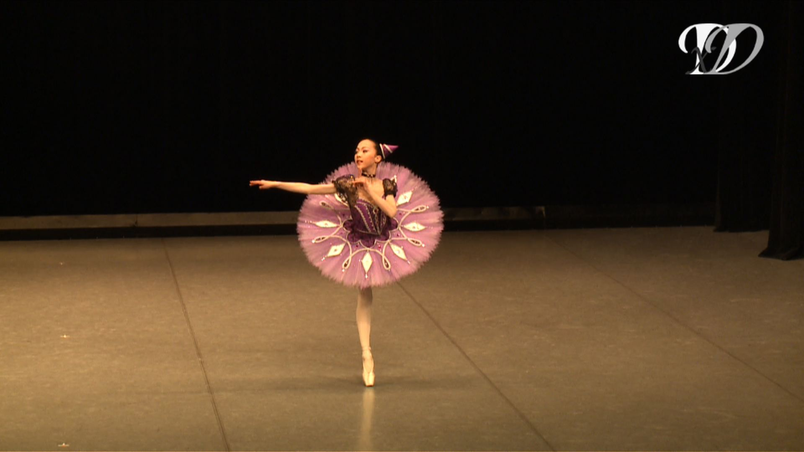
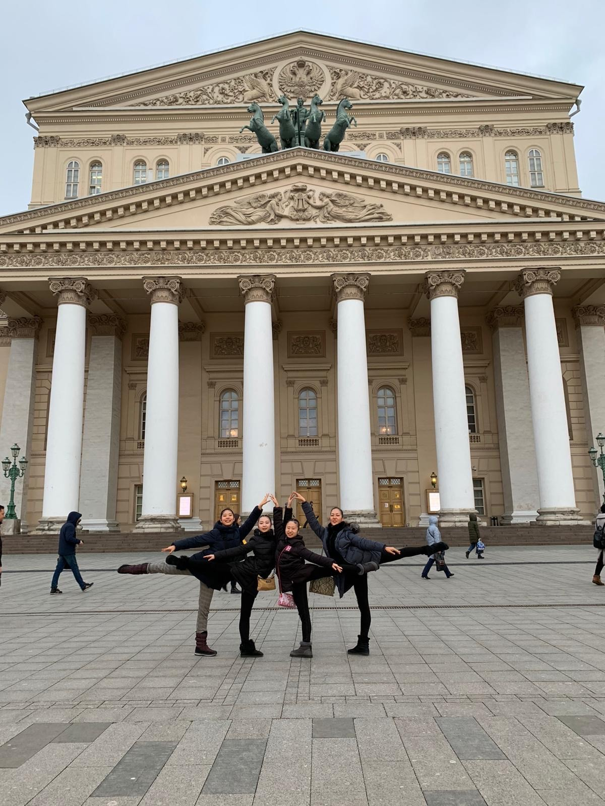
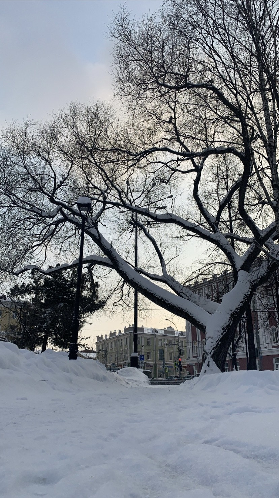
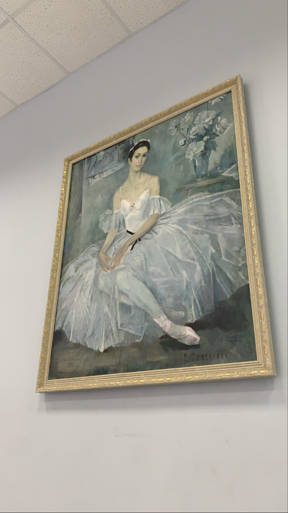

// ballet
A history, more or less in order — the performances, the years in between, and the studio hours no one sees.

Age 3–10
There was a studio right next to my house, and I started when I was three. It pulled me in gradually, and by ten I was dancing every day.

Age 14 & 16
Two weeks of training programs abroad — Berlin at fourteen, the Bolshoi Ballet Academy in Russia at sixteen. Both brief, both intense, and both made me want more. Having trainings with other young talents who want to be profectional influenced me a lot.

Sep 2021, age 17
I moved to attend ballet school full-time. The plan was four years, through to graduation. I practiced hard 6 dsys a week. it was tough, but it made me stronger and independant.

Age 18
The war started, and I had to leave. It wasn't how I expected the four years in Perm to end, and quitting ballet altogether was one of the hardest decisions I've made.
Now
Not performing anymore, but I enjoy dancing everyweek as a hobby without any pressure.